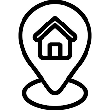

Perfil Carol Lopes Carol Lopes Carol Lopes Carol Lopes Carol Lopes Carol Lopes Carol Lopes Carol Lopes Carol Lopes Carol Lopes Carol Lopes Carol Lopes Carol Lopes Carol Lopes Carol Lopes Carol Lopes Carol Lopes Carol Lopes Carol Lopes Carol Lopes Carol Lopes Carol Lopes Carol Lopes Carol Lopes Carol Lopes Carol Lopes Carol Lopes Carol Lopes .
Pefil Carol Lopes Carol Lopes Carol Lopes Carol Lopes Carol Lopes Carol Lopes Carol Lopes Carol Lopes Carol Lopes Carol Lopes Carol Lopes Carol Lopes Carol Lopes Carol Lopes Carol Lopes Carol Lopes Carol Lopes Carol Lopes Carol Lopes Carol Lopes Carol Lopes Carol Lopes Carol Lopes Carol Lopes Carol Lopes Carol Lopes Carol Lopes Carol Lopes Carol Lopes Carol Lopes Carol Lopes Carol Lopes Carol Lopes Carol Lopes Carol Lopes Carol Lopes Carol Lopes Carol Lopes Carol Lopes Carol Lopes Carol Lopes Carol LopesCarol Lopes Carol Lopes .
• Programador HTML;
• Desenvolvimento FrontEnd;
• Bla Bla;
• Bla Bla;
• Bla Bla;
Técnico em Informática para Internet pelo Instituto Federal do Paraná (2020) e Tecnologo em Análise e Desenvolvimento de Sistemas pela Universidade Tecnologica Federal do Paraná (2024).
Universidade Federal do Rio de Janeiro (UFRJ) – Bacharelado em Ciência da Computação
Universidade Estadual de Campinas (UNICAMP) – Mestrado em Engenharia de Software
Empresa X(2021-2022)
Empresa Y(2022-2024)
Empresa Z(2024-Atual)
 Rua Joao da Silva, Santo Angelo, Telêmaco Borba, Paraná
 (42) 99999-99999
(42) 99999-99999
 fulano.ficticio@email.com
fulano.ficticio@email.com